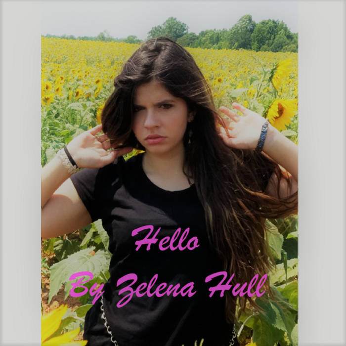

Hello EP
Doomed Duck~ Highly inspired by the corruption that leads to recessions or depressions, this song has a bleeding edge cutting deep into the hearts of the unaware. People are forced to participate in a system they actively despise. Greed actively works against the communal nature of humanity. This song is a critique of the system that is used to fill the void. We constantly set ourselves up for collapse constantly, to the point were it’s a given. This hard-rock song is dynamic yet consistent, dark and yet hopeful, gritty and yet graceful. I have many references sprinkled in the lyrics I hope you enjoy.
Hey Girls~ This song is about taking revenge and control of the situation. Don’t let yourself be walked on over by other people, you have to take a stand for yourself. Hey Girls addresses sexism and basis. Our protagonist goes from taking it to dishing it out to those who deserve it. It’s a girl power southern rock song to put on after a nasty break up.
Lyrics...
Doomed Duck
Doomed Duck sitting on the concrete
Sound of a Gun shot going on Wall St
Side line picking up going on Friday
Limit it all till the sun, till the sun don't come
Lady lace tripping on a phone chord
water funnels up and down again
Double standard everything up and down again, again
lucky duck run away come back another day, day
Hello it's starring at you, but you don't wanna see it cause it hurts
Hello but it'll hurt everyone else if you don't look it up
Sound of the Gunshot, duck on the concrete
Just another day on wall st
Sound of the Gunshot, duck on the concrete
Just another day on wall st
Innocent, No wait it isn't, law and order renamed.
The guilty ones aren't the ones who are blamed.
Nothing is true anymore, money gets you the higher score
Stop lying it's tearing you up more and more and more
Hello it's starring at you, but you don't wanna see it cause it hurts
Hello but it'll hurt everyone else if you don't look it up
Sound of the Gunshot, duck on the concrete
Just another day on wall st
Sound of the Gunshot, duck on the concrete
Just another day on wall st
I tried can't be denied, this fire inside
My heart is burning into a ball of fire
Judgement on those who don't deserve it
The 1% gets all of it!
Hello it's starring at you, but you don't wanna see it cause it hurts
Hello but it'll hurt everyone else if you don't look it up
Sound of the Gunshot, duck on the concrete
Just another day on wall st
Sound of the Gunshot, duck on the concrete
Just another day on wall st
Hey Girls
Hey girls were gonna get them back
for running around talking smack
you see them grinning they think there winning
but the ladies have stopped forgiving
you never know if there fake or real or how many hearts they have to steal
don't know how much more I can take when they drive in that stake...
I've had men lie straight to my face
then spit in it and call me a disgrace
say no woman should go around hunting
that's for men, that's for men...
you never know if there fake or real or how many hearts they have to steal
don't know how much more I can take when they drive in that stake...
I'm gonna prove that a woman can break a heart just like a man can
I'll find them anywhere stab them in the back
I'll do whatever I have to, to get this broken heart back
I'll glue together pieces and make it fit some how...
you never know if I'm fake or real or how many hearts I have to steal
don't know how much more they can take when I drive in that stake...
you never know if I'm fake or real or how many hearts I have to steal
don't know how much more They can take when I drive in that stake...
Just A Cinderella Story
Just a Cinderella Story~ If your naive you can be easily taken advantage of. This song is about a young woman being fooled into a relationship by a slick boy toy. Looks can fool and going head first into something without taking the time for yourself is a bad idea. Life isn’t a fairly tale ending and your going to set yourself up for failure if that is what you expect. You shouldn’t project your expectations onto others, because that is a recipe for toxicity. Pop country.
Joyride~ Sometimes things don’t go anywhere and that is true for relationships too. It’s easier to drown our sorrows than to confront them head on. Joyride is about a woman not being able to let go her past. She would rather pretend her relationship is going great than to actually address the underlining issues. This is a classic country song with track contributions from Mike Schrimpf, Mr. Steve Hinson, Grammy players, and some house band members for the Grand Ole Opry.
Lyrics...
Just A Cinderella Story
Just another cookie cutter Cinderella barbie, thinking some little magic will happen
that beautiful prince charming, will come save me oh baby...
She feel in love too young... her innocence was gone... does she not know
that the cold will make her heart blue.
Just a Cinderella story have the prince come save me...
oh well he didn't come. you though it would a fairy book ending
were the queen meets her king... well guess what your endings all wrong
The pretty pretty prince has no common sense, only picks those he walk over
you might be a little naive, but its not that hard to conceive
He will cheat, he will lie, that you can't deny
there ain't no reason other than his ego
He'll off your stock if you get what I mean
Just a Cinderella story have the prince come save me...
oh well he didn't come. you though it would a fairy book ending
were the queen meets her king... well guess what your endings all wrong
Just a Cinderella story have the prince come save me...
oh well he didn't come. you though it would a fairy book ending
were the queen meets her king... well guess what your endings all wrong
Joyride
They say you have eyes that you’ve been battin’
One for one tit for tat, none of the love is coming back
Take em’ for a joy ride, promise them a good time every Saturday night
But the feeling ain’t right, feeling alone tonight
Take a lot of care, wait somewhere, Thinking he might come,
when he’s gone, you don’t belong, but you don’t love him
Take em’ for a joy ride, promise them a good time every Saturday night
But the feeling ain’t right, feeling alone tonight
You hope one day, your sadness will go away
By drowning in false hopes and piecing together broken dreams
Take em’ for a joy ride, promise them a good time every Saturday night
But the feeling ain’t right, feeling alone tonight
Take em’ for a joy ride, promise them a good time every Saturday night
But the feeling ain’t right, Still feeling alone tonight
Take em’ for a joy ride, promise them a good time every Saturday night
In Love With You
These are both fun country love songs. In Love With You talks about how the simple pleasures make live amazing. If it’s the love poem then Country Boy is the meet cute/flirt that started it all. It makes puns about American culture and norms in a fun a light heart-ed way.
Lyrics...
In Love With You
Nothing else has gone my way until you came here to stay
I love life and don't be surprised to hear me say.
The sweet smell of hickory, your hand oh touching my knee
I can do this all the time, it's all up to you baby
Only live one life, so don't think too hard
All I wanna do is be in love with you
In love with you
Only live one life, so don't think too hard
All I wanna do is be in love with you
In love with you
Give me some of that and I could pretend
I hadn't had it yet and we could do it again
At the lake nothing else to do, all I wanna do is have some fun with you
All you wanna do is stay here with me
We'll watch the fire flys, in the back of your truck
Don't be surprised to hear me say
Only live one life, so don't think too hard
All I wanna do is be in love with you
In love with you
Only live one life, so don't think too hard
All I wanna do is be in love with you
In love with you
Country Boy
Hey I see them boots you got on, I see they from China
I see that they are plether, I wanna man with real leather
pick me up and toss me around, slap them boots on the ground
I wanna country boy, someone I can enjoy
Don't wanna chillized boy toy, I wanna real man
I wanna country boy, someone I can enjoy
No No chillized boy toy, I wanna real man
I wanna strong back, not wearing a straw hat
I'm not into that, into that
I wanna man who can pick me up and rock me in a country world
Cause I'm a read hot USDA American Girl
I wanna country boy, someone I can enjoy
Don't wanna chillized boy toy, I wanna real man
I wanna country boy, someone I can enjoy
No No chillized boy toy, I wanna real man